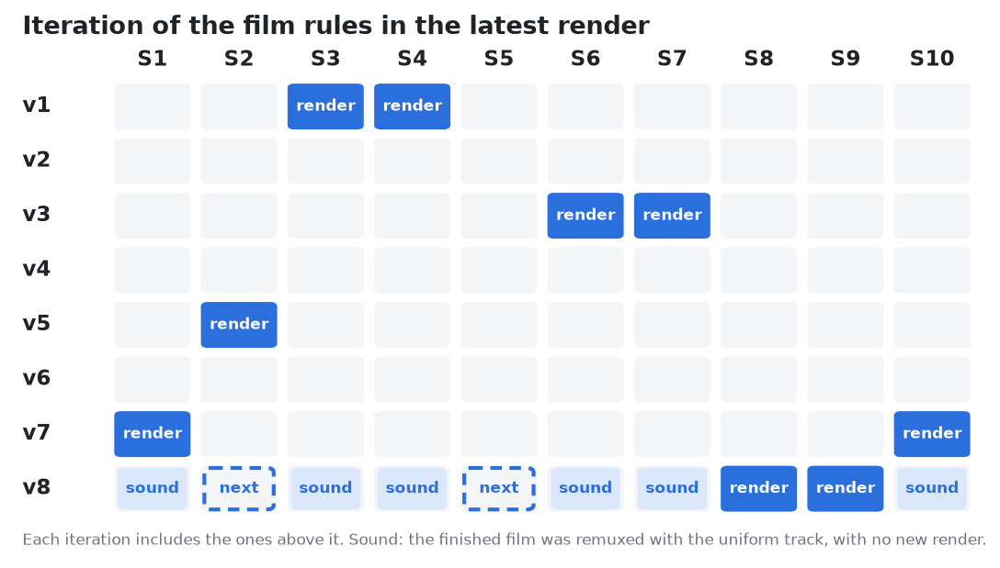

Lecture films
Advanced Quantum Materials 2027
Films of the prerecorded lectures, with the recorded voice of the lecture over animations of its physics
Session 1 Second quantization, mean-field and spontaneous symmetry breaking
Session 2 Symmetries, band structure theory and effective models
Session 3 Topological band structure theory
Session 4 Electrons in magnetic fields, the quantum Hall effect and Landau levels
Session 6 Classical magnetism and magnons
Session 7 Quantum entanglement and tensor networks
Session 8 Quantum magnetism, spinons and Kondo physics
Session 9 Excitations and defects in quantum materials
Session 10 Machine learning quantum materials
Versions The rules each film follows
The way the films are made changes from one film to the next. The chart shows which iteration of the rules the latest render of each film follows; the films marked next are being made now.
